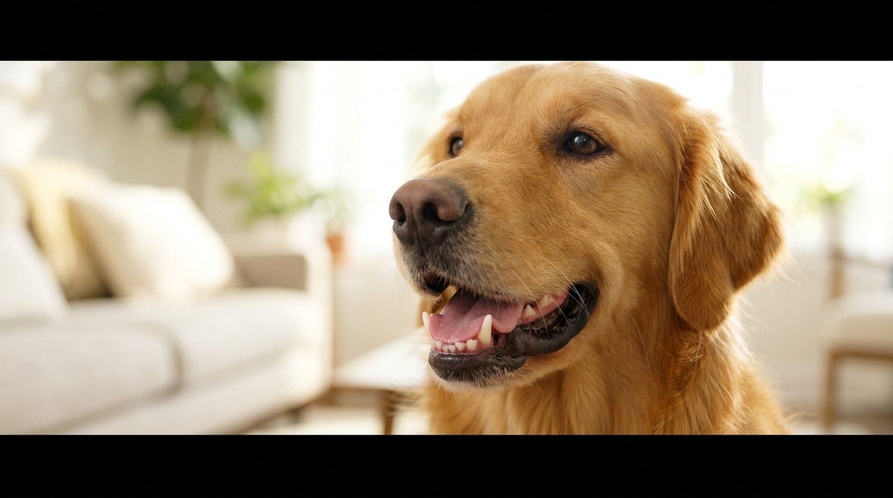

«Собачий запах изо рта — это просто собачий запах» — один из самых вредных мифов в ветеринарии. Здоровая пасть пахнет нейтрально. Стойкий неприятный запах — это всегда симптом, от зубного камня до болезней почек и сахарного диабета. Разбираем шесть причин и что с каждой из них делать.
Ветеринары слышат это постоянно: «у него всегда так пахло». Проблема в том, что запах нарастает постепенно, и хозяин адаптируется, принимая патологию за норму. Молодая здоровая собака с чистой пастью пахнет практически нейтрально или с лёгким «мясным» оттенком сразу после еды — и это проходит за 15-20 минут.
Стойкий запах — гнилостный, кислый, аммиачный, похожий на ацетон или рыбу — всегда говорит о патологии. По данным исследования Veterinary Oral Health Council, к 3 годам у 80% собак есть та или иная стадия пародонтального заболевания. И большинство хозяев об этом не знают — собака не жалуется на боль, просто ест чуть медленнее или избегает твёрдых игрушек.
Самая частая причина — примерно 85% случаев неприятного запаха у собак связаны именно со стоматологией. Схема развития простая:
Мелкие и брахицефальные породы — мопс, бульдог, йорк, чихуахуа — страдают непропорционально часто: зубы расположены плотнее, самоочищение хуже. У той-терьеров к 5 годам без ухода нередко не остаётся ни одного здорового зуба.
Запах при периодонтите — интенсивный гнилостный, иногда со сладковатым оттенком. При осмотре видны коричневые отложения на зубах, красная или кровоточащая линия дёсен.
Застрявший между зубами кусочек кости, щепка, кусочек игрушки — всё это создаёт локальный воспалительный очаг с характерным гнойным запахом. Собака при этом может тереть морду лапой, чавкать или избегать жевания на одну сторону.
Опухоли ротовой полости — меланома, плоскоклеточный рак, акантоматозная амелобластома — встречаются чаще, чем принято думать. Меланома полости рта — самая распространённая опухоль ротовой полости у собак; риск выше у тёмнопигментированных пород (лабрадор, такса, кокер-спаниель). Признак — локальный запах, асимметрия морды, кровоточивость, выпадение зубов без очевидной причины.
Любое образование в пасти, заметное визуально, — к ветеринару в течение нескольких дней. Меланома рта у собак агрессивна, ранняя диагностика кардинально меняет прогноз.
Гастрит, гастроэзофагеальный рефлюкс, воспалительное заболевание кишечника дают кислый или «прокисший» запах изо рта — от забрасывания желудочного содержимого в пищевод. Сопровождается отрыжкой, периодической рвотой или срыгиванием, нестабильным аппетитом.
Мегаэзофагус — расширение пищевода с нарушением его моторики — даёт особенно резкий гнилостный запах из-за застоя пищи в пищеводе. Характерно для немецкой овчарки, ирландского сеттера, грейт-дога, шарпея. Видимый признак — срыгивание непереваренной еды через несколько часов после кормления.
Хроническая почечная недостаточность (ХПН) нарушает выведение азотистых продуктов обмена. Мочевина накапливается в крови (уремия), проникает в слюну и выдыхаемый воздух — появляется специфический аммиачный или «рыбный» запах изо рта, который хозяева иногда описывают как «моча» или «металл».
ХПН — очень распространённое заболевание у собак крупных и гигантских пород в возрасте 8+ лет (бернский зенненхунд, немецкий дог, боксёр, лабрадор). Другие симптомы: полидипсия, полиурия, снижение аппетита, рвота по утрам натощак, потеря веса. Диагностика: биохимия крови (мочевина, креатинин, SDMA) + общий анализ мочи.
Аммиачный запах изо рта у собаки без явных стоматологических проблем — показание для анализа крови в ближайшие дни. Это не «пройдёт само».
При сахарном диабете и особенно при его осложнении — диабетическом кетоацидозе (ДКА) — в крови и выдыхаемом воздухе накапливаются кетоновые тела. Запах при ДКА описывают как сладковатый, похожий на фруктовый или растворитель для лака. Это неотложное состояние.
Сахарный диабет у собак встречается у 1 из 300-500 животных, чаще у нестерилизованных сук и у кастрированных самцов с ожирением. Самцы золотистого ретривера, самоеды, кеесхонды в зоне риска. Запах ацетона + полидипсия + полиурия + быстрая потеря веса = обязательный визит к врачу в тот же день.
Собаки едят кал (собственный, кошачий, любой другой) — это называется копрофагия. Запах после такого «перекуса» специфический и сохраняется несколько часов. Копрофагия часто имеет поведенческие корни (скука, тревожность, попытка привлечь внимание) или диетические (дефицит ферментов, низкокачественный корм). Также собака может поесть что-то тухлое или мусор на прогулке.
Если копрофагия регулярна — стоит проверить качество корма, добавить пробиотики (Fortiflora, Vetom), исключить ферментативную недостаточность. Поведенческую копрофагию корректируют дополнительной активностью и работой с кинологом.
Ежедневная чистка зубов — единственный достоверно эффективный метод профилактики зубного камня. Ни кости, ни жевательные лакомства, ни специальные корма не заменяют механическое удаление налёта.
Если камень уже образовался — домашняя чистка его не удалит. Нужна ультразвуковая чистка в клинике под общей анестезией. Это не опасная процедура при правильной предварительной подготовке (анализы крови, оценка рисков анестезии). После чистки — полировка эмали, что замедляет повторное образование налёта.
Периодичность: при регулярном домашнем уходе — раз в 1-2 года. Без домашней чистки — у мелких пород уже раз в 6-8 месяцев. Некоторые клиники предлагают «чистку без анестезии» — это косметическая процедура, она убирает видимые отложения, но не работает под линией дёсны, где образуются самые опасные субгингивальные камни.
Не все жевательные игрушки одинаково полезны для зубов. Есть несколько критериев безопасности и эффективности, которые стоит учитывать при выборе.
Правило «надавить ногтем»: если материал не продавливается ногтем — он слишком твёрдый и создаёт риск перелома зубов. Переломы зубов на жёстких «неубиваемых» игрушках — частая травма, которую хозяева замечают поздно. Нейлоновые кости (Kong, Nylabone твёрдые серии), настоящие кости, рога, копыта — всё это зона риска для агрессивных жевателей.
Что безопаснее: резиновые игрушки средней твёрдости (Kong Classic), жевательные лакомства (Greenies, Whimzees), специальные диетические снеки. Они механически очищают поверхность зубов при жевании и не ломают эмаль.
Важно: жевательные игрушки и лакомства — дополнение к чистке зубов, а не замена. Доказанная эффективность жевательных изделий в предотвращении зубного камня значительно ниже, чем у регулярной механической чистки щёткой.
Брахицефальные породы — мопс, французский бульдог, английский бульдог, боксёр, ши-тцу, пекинес — имеют укороченный череп, при этом количество зубов остаётся стандартным. Зубы буквально стоят «в очередь»: перекрывают друг друга, создают трудно очищаемые карманы между корнями.
Последствия предсказуемы: налёт и камень скапливаются быстрее, чем у длинномордых пород. Периодонтит развивается агрессивнее. Многие брахицефалы теряют зубы к 4-6 годам без регулярного ухода. Профессиональная чистка раз в 6 месяцев для мопса или французского бульдога — это не роскошь, а необходимость.
Дополнительный фактор: брахицефалы часто дышат ртом, что усиливает пересыхание слизистой и создаёт благоприятную среду для бактерий. Гигиена полости рта для этих пород требует особого внимания с молодого возраста — с момента смены молочных зубов на постоянные (3-7 месяцев).
С 3 до 7 месяцев у щенков идёт смена зубов: молочные выпадают, вырастают постоянные. В этот период запах изо рта может быть необычным — кровянистый, металлический. Это нормально: ткани десны при прорезывании зубов воспалены и кровоточат.
Что ненормально: молочный зуб не выпал, а рядом уже вырос постоянный («зуб-призрак», персистирующий молочный зуб). Это очень распространённая проблема у мелких пород. Два зуба стоят рядом, между ними накапливается налёт, и уже в возрасте 1 года у собаки начинается периодонтит. Персистирующие молочные зубы нужно удалять у ветеринара — они не выпадут сами.
Начинать приучать щенка к чистке зубов нужно именно в этот период, пока зубы ещё меняются. Привычка, сформированная в возрасте 3-6 месяцев, сохраняется на всю жизнь.
Качество корма напрямую влияет на микробиом ротовой полости. Корма с высоким содержанием простых углеводов и сахаров создают питательную среду для бактерий, вызывающих гингивит. Натуральное кормление (сырое мясо, BARF) теоретически снижает накопление налёта за счёт механической работы жевательных мышц, но требует ветеринарного контроля баланса рациона и несёт риски инфекций (сальмонелла, листерия) для животного и хозяев.
Главный вывод: запах изо рта у собаки — информация, а не неизбежность. Большинство причин устранимы: зубной камень снимается, инфекции лечатся, болезни почек и диабет контролируются. Регулярная чистка зубов дома плюс плановые осмотры у ветеринара — это всё, что нужно для здоровой пасти на протяжении всей жизни собаки.